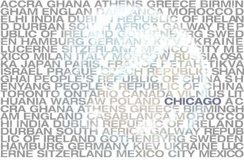

 |
| Ah, sisters. The thumb sucking, blanket-toting Peanuts philosopher Linus Van Pelt once called them “the crabgrass in the lawn of life.” How many do you have? If you consider yourself a typical representative of the city of Chicago, then you have plenty. Twenty-four, to be exact, of differing “sister city” sizes around the globe. Those are some pretty big girls. And like any episode of Jerry Springer gone horribly, globally bad, none of them quite know each other from a hole in the wall, and there's no DNA test broad enough to determine paternity. Seriously, whoever heard of the Sister Cities program? I suppose you could say Chicago has a crabgrass problem. As a member of Sister Cities International, Chicago's Sister City program aims at “creating and strengthening partnerships between U.S. and international communities in an effort to increase global cooperation at the municipal level, to promote cultural understanding and to stimulate economic development.” What this boils down to is a collection of cities around the world agreeing to share bits and pieces of their culture with us in return for bits and pieces of our own. Twenty-four cities, including Paris, Delhi, Moscow, Mexico City, Hamburg, and Casablanca, have made Chicago their American sibling. The result is a mixture of various artistic and humanitarian exchanges that seem to have a wonderful message at heart: the cultural divide is meant to be bridged, and cities can do this by sharing their resources with one another. So, we send a blues group to perform in Milan or a medical group to aid the people of Casablanca. Money is raised for mammography equipment in the Ukraine. Since 1960, when Mayor Richard J. Daley signed the first agreement with Warsaw, Poland, such acts of diplomatic kindness have made the program a peaceful opportunity for Chicago to relate to the world. Too bad nobody knows about it. Thus, my initial reaction to the project was, well, positive ambivalence. These alliances seem to attempt to do what the Internet promised to do oh so long ago- connect the world as a global community in an effort to share culture and texture and blah, blah, blah. The Internet, for all of its possibilities, seems to have mostly failed (unless you count widespread pornography as reaching out to the masses and adding cultural value, which I typically don't) in that respect, mostly because it requires some effort on the part of the user. Similarly, the Chicago Sister Cities program seems to require a lot of effort from a relatively uninterested, or at the very least, uninformed audience. But let's imagine, for a moment, that we are interested. In fact, the entire city of Chicago, every citizen, every cell phone-abusing resident of Wrigleyville, every 43-year-old woman in line at Dominick's with her Link card in hand and every sophomore at Whitney Young high school really does care about the people and culture of Shanghai, China. We care so much that since 1985, when Shanghai became Chicago's sister city, we watched as companies like General Motors and Bell South exported much of their business to this ancient Chinese city, completely changing its cultural landscape. Journalists Kari Huus and Andrew Locke describe the scenery of Shanghai as such: ‘Long live Marxist, Leninist ideology, Mao Zedong thought and Deng Xiaoping theory' reads a banner on a department store, paying tribute to the heroes of the last 50 years. But here on Nanjing Road, new icons have crowded in: signs touting Cartier, McDonald's, Mickey Mouse, Remy Martin and Hello Kitty scream for attention. Shanghai, more than any other place in this nation, looks like the face of China's future. The face of China's future looks a lot like Michigan Avenue, no? And who doesn't need their very own Michigan Avenue? In 1996, still acting as the caring sister to our Chinese friends, we watched the poorly run Shanghai orphanages get slammed with human rights violations even in the midst of the one-child law of China. As conscientious and globally-minded Chicagoans, we might then ask, at what point does Shanghai's sister, Chicago, step in? Is this the purpose of the program? A similar example of taking local events into global hands occurred when the British magazine The Guardian offered its European readership a chance to affect the outcome of the American Presidential election by writing letters to citizens of Ohio. It failed. Miserably. But the hostile reaction of those Americans claiming that “limey assholes” were butting in may not be just an American symptom of the disease of disinterest. Consider all the good this program attempts to do, all of the humanitarian acts of kindness it aims to perform. And then wonder who's heard about it. While most of us around here may identify with the city, we don't necessarily feel the need to represent it to the rest of the world. The same may also go for our friends in the sister cities. Add a lack of information to an easy distraction by the here and now, and one begins to wonder which audience this program aims to impress. Because anyway, whoever heard of the Sister Cities program? Well now, I suppose you have. |